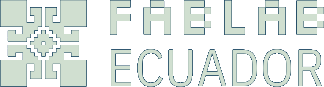

Manifesto of the FabLab Ecuador Network
Living Document · Since 2016
In 2016, during the FabAtom gathering held at Conquito, the FabLab Ecuador Network consolidated its first manifesto. This was not merely a meeting of digital fabrication labs. It brought together universities, entrepreneurs, designers, engineers, educators, public sector leaders, researchers, and key actors from Ecuador’s productive ecosystem.
That moment marked a turning point: we stopped operating as isolated initiatives and began to think as a coordinated network. Since then, this manifesto has been reviewed and updated during our annual gatherings, evolving alongside new technologies, expanded capacities, and emerging national challenges.
The FabLab Ecuador Network is a national articulation of laboratories, academia, industry, communities, and public institutions that believe in the transformative power of making. We are part of the global Fab Lab ecosystem and aligned with international standards, yet our ambition goes further: to contribute and lead from our territory.
We believe technology is infrastructure for equity. That learning by doing is a national development strategy. That manufacturing locally strengthens technological sovereignty. That documenting and openly sharing knowledge accelerates collective progress.
We are committed to advancing a progressive standardization of physical and digital processes that increases compatibility between laboratories, strengthens production traceability, and enhances interoperability across platforms, machines, and methodologies.
Standardization does not restrict creativity. It creates a shared language. It ensures that a design developed in one node can be fabricated in another without friction. It guarantees that digital workflows translate precisely into physical outcomes. It makes distributed manufacturing technically viable, economically sustainable, and globally competitive.
Our vision is clear: to consolidate Ecuador as a global reference in digital fabrication, advanced technological education, and standardized distributed production. We aim for Ecuador not only to consume technology, but to design systems. Not only to fabricate objects, but to export methodologies. Not only to participate in the global network, but to lead from Latin America.
We are infrastructure for the future.
We are the FabLab Ecuador Network.